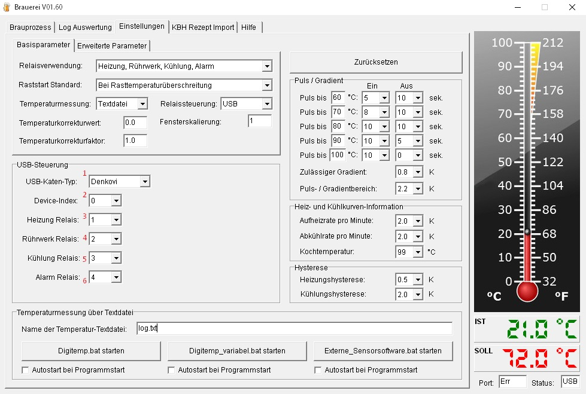
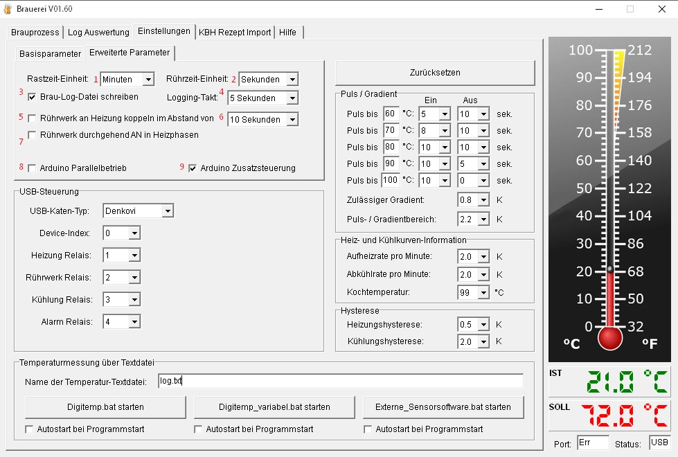
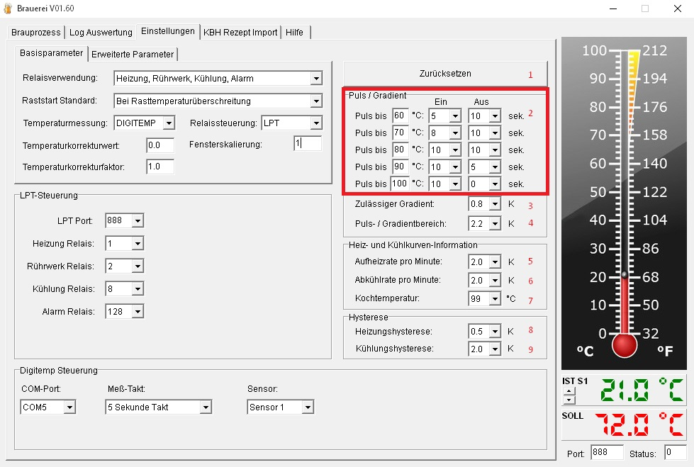

Hilfe Datei zu Brauerei V 1.52 – by Emilio – HOME
Programmeinstellungen:
Der Einstellungen-Reiter ist nur bei inaktivem
Brauprozess verfügbar.
Mit der Version 1.51 wurde die
Darstellung der Einstellungen komplett überarbeitet
USB-Steuerung:

Steuerung der Schalthardware über Batch-Dateien oder den USB- oder Parallelport
USB-Kartentyp Denkovi oder KMTronic
COM-Port der KMTronic-Hardware bzw Device-Index für Denkovi-Hardware
USB-Heizung: Relais für die Heizung
USB-Rührwerk: Relais für das Rührwerk
USB-Pumpe: Relais für die Pumpe
USB-Alarm: Relais für den Alarm
LPT-Steuerung:
Steuerung der Schalthardware über Batch-Dateien oder den USB- oder Parallelport
Port: Adresse des LPT-Ports
LPT-Heizung: Dezimalwert des Port-Bits für die Heizung ( Tabelle siehe unten )
LPT-Rührwerk: Dezimalwert des Port-Bits für das Rührwerk ( Tabelle siehe unten )
LPT-Pumpe: Dezimalwert des Port-Bits für die Pumpe ( Tabelle siehe unten )
LPT-Alarm: Dezimalwert des
Port-Bits für den Alarm ( Tabelle siehe unten
)
LPT-Digitalwerte:
|
Bit |
Pin/Relais |
Binärwert |
Dezimalzahl |
|
0 |
1 |
„00000001“ |
1 |
|
1 |
2 |
„00000010“ |
2 |
|
2 |
3 |
„00000100“ |
4 |
|
3 |
4 |
„00001000“ |
8 |
|
4 |
5 |
„00010000“ |
16 |
|
5 |
6 |
„00100000“ |
32 |
|
6 |
7 |
„01000000“ |
64 |
|
7 |
8 |
„10000000“ |
128 |
Batchdatei-Steuerung:
Steuerung der Schalthardware über Batch-Dateien oder den USB- oder Parallelport
Batchdateien für die Hardwaresteuerung
Hier kann gewählt werden ob die Batchbefehle zyklisch wiederholt werden sollen.
Steuerungsparamter:

Aktivierung der erweiterten Einstellungen
Auswahlfunktion der Relaisnutzung
Auswahlfunktion für Raststart
Bei
Rasttemperaturüberschreitung
Die Rastzeit beginnt sobald
die Temperatur zum ersten mal überschritten wird.
Bei
Rasttemperaturunterschreitung
Die Rastzeit beginnt sobald die
Temperatur zum ersten mal unterschritten wird.
Temperaturunabhängig
Die
Rastzeit beginnt unmittelbar, temperaturunabhängig
Rastspezifisch
Die o.A.
Funktionen können beim Brauprozess individuell für jede
Rast eingestellt werden.
Auswahl der Rastzeit-Einheit
Auswahl der Rührzeit-Einheit
Eingabe der Zeit zwischen zwei Logging-Einträge
Allgemeine Einstellungen:

Zurücksetzen der Einstellungen auf Auslieferzustand
Verhältnis des Einschalt- zum Ausschalt-Impuls während der Taktung
Gradientgrenze: Ist der Temperaturanstieg innerhalb der letzten Minute größer als die hier fesgelegte Zahl werden die Einschaltpulse der Heizung so lange ausgesetzt bis der Gradient unterschritten oder die Zieltemperatur erreicht wird
Taktungstemperatur: Ist die Temperaturdifferenz kleiner dieser Eingabe wird getaktet
Aufheizrate zur Berechnung der Heizzeit und ETA
Hyteresewert für die Heizung: Nach dem Erreichen der Zieltemperatur wird die Heizung erst wieder nach unterschreiten der Zieltemperatur minus des Hysteresewerts wieder eingeschaltet.
Hyteresewert für die Kühlung: Nach dem Erreichen der Zieltemperatur wird die Kühlung erst wieder nach überschreiten der Zieltemperatur plus des Hysteresewerts wieder eingeschaltet.
Dateiname des Temperatur-Textfiles.
Start-Button für
Temperaturmessung mit Digitemp; die Digitemp.bat wird gestartet. Der
COM-Port ist in dieser Batchdateien fest hinterlegt und kann direkt
in der Batchdatei geändert werden.
Sollte die
Temperaturmessung während des Brauprozesses ausfallen kann die
Batchdatei durch Doppel-Klick auf die Thermometer-Grafik erneut
gestartet werden.
Wird der Haken bei „Autostart bei
Programmstart“ gesetzt, wird die Aktion beim Start der
Brauerei ausgeführt.
Start-Button für
Temperaturmessung mit Digitemp; die Digitemp_variabel.bat wird
gestartet. Der COM-Port wird beim Start der Batchdateien abgefragt.
Sollte die Temperaturmessung während des Brauprozesses
ausfallen kann die Batchdatei durch Doppel-Klick auf die
Thermometer-Grafik erneut gestartet werden.
Wird der Haken bei
„Autostart bei Programmstart“ gesetzt, wird die Aktion
beim Start der Brauerei ausgeführt.
Start-Button für
Temperaturmessung für beliebige Temperatursoftware; die
Externe_Sensorsoftware.bat wird gestartet. Hier könnt ihr eine
beliebige Software in der Batch-Datei eintragen.
Sollte die
Temperaturmessung während des Brauprozesses ausfallen kann die
Batchdatei durch Doppel-Klick auf die Thermometer-Grafik erneut
gestartet werden.
Wird der Haken bei „Autostart bei
Programmstart“ gesetzt, wird die Aktion beim Start der
Brauerei ausgeführt.